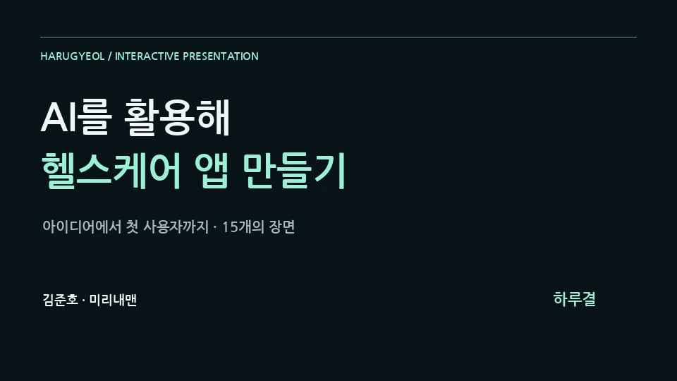

Sound Design Lab V2 — Agent Harness Lecture
감각적 요청을 입력·해석·출력·검수로 구조화하고, 나만의 GPT 하네스를 조립하는 30장 강의다.
작품 열기Open body
교수 · 저자 · 창작자 · 시스템 설계자Professor · Author · Creator · System Designer
AI에게 판단을 맡기지 않고,AI와 함께 메시지의 몸을 만드는 사람.I do not hand judgment to AI.I work with AI to give messages a body.
미디어융합 전공 공학박사 김준호는 음악, 영상, 출판, 제품, 연구와 사회적 가치를 하나의 인과관계로 연결합니다.Joonho Kim, Ph.D. in media convergence, connects music, video, publishing, products, research, and social value through one causal body.
미디어는 메시지의 몸이다.Media is the body of the message.
홈은 모든 내용을 쌓아놓는 곳이 아니라 각 관계로 들어가는 문입니다.The home page is a set of doors into distinct relationships, not a pile of every detail.
만드는 행위가 어떤 관계와 태도를 갖는지 보여줍니다.How acts of making embody relation and attitude.
생각과 주장이 기록과 증거의 몸을 갖습니다.Ideas and claims take on bodies of record and evidence.
기술과 창작이 나눔의 거리를 줄입니다.Technology and creation shorten the distance to sharing.
판단의 기준과 최종 책임이 한 사람의 태도를 드러냅니다.Criteria for judgment and final responsibility reveal the person behind the work.
노래, 슬라이드, 화면과 이야기가 배포로 끝나지 않고 다음 창작을 바꾸는 기억으로 축적됩니다.Songs, slides, screens, and stories accumulate as memory that changes the next creation.
감각적 요청을 입력·해석·출력·검수로 구조화하고, 나만의 GPT 하네스를 조립하는 30장 강의다.
작품 열기Open body
원하는 노래를 만들기 위한 프롬프트와 제작 흐름을 슬라이드의 몸으로 설명한다.
작품 열기Open body
코딩을 메시지가 작동하는 몸으로 바라보는 미디어 철학을 강의 화면으로 설명한다.
작품 열기Open body
한 사람의 더 나은 하루를 위해 사용자 정의부터 화면·데이터 설계와 검증까지 AI와 함께 앱을 만드는 과정을 15장으로 경험합니다.
작품 열기Open body바람이 불면 돌아오는 첫사랑의 기억을 노래와 이미지 시네마와 웹툰으로 펼칩니다.
작품 열기Open body509만 원 신제품보다 내 꿈을 펼치는 일이 더 설렌다.
작품 열기Open body